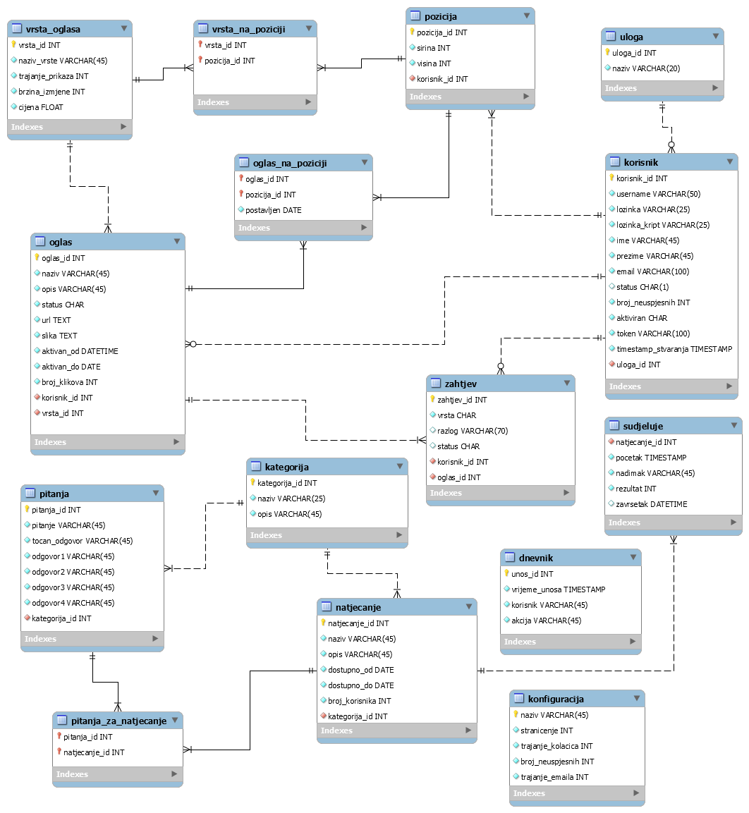

Dokumentacija
Opis projektnog zadatka
Zadatak je bio napraviti sustav koji omogućuje provjeru znanja korisnika i natjecanje s drugim korisnicima. Moguće su četiri vrste korisnika, anonimni (neregistrirani korisnik), registrirani korisnik, moderator te administrator.
Anonimni korisnici mogu vidjeti kategorije natjecanje, sva natjecanja iz neke kategorije (aktivna i prošla) te se natjecati i vidjeti rang listu. Mogu se i registrirati u sustav te postati registrirani korisnici.
Registrirani korisnici imaju sve mogućnosti kao i anonimni korisnici uz neke dodatne. Nakon prijave u sustav, mogu poslati administratoru zahtjev za kreiranjem novog oglasa ili za blokiranjem postojećeg. Mogu vidjeti svoje zahtjeve, njihov status te statitstiku klikova za svoje oglase.
Moderator je registrirani korisnik koji moderira kategorije za koje je zadužen. Definira pitanja za kategoriju i organizira natjecanja za tu kategoriju. Također određuje koji će se oglasi prikazivati na pozicijama za koje je zadužen, odgovara na zahtjeve za oglašavanje i blokiranje zahtjeva.
Administrator je odgovoran za konfiguraciju sustava, određuje pozicije oglasa, vidi statistiku svih oglasa, kreira kategorije pitanja i dodjelju im moderatore.
Opis projektnog rješenja
ERA model

Popis i opis skripata i mapa mjesta
Skripte
- aktiviraj.php - skripta na koju se usmjerava kada se klikne na poveznicu za aktivaciju koji korisnik dobije na mail kod registracije, provjera je li poveznica istekla te ako nije, aktivira korisnički račun
- baza.class.php - klasa za pristup i rad s bazom podataka
- dokumentacija.html - stranica s dokumentacijom projektnog rješenja
- index.php - početna stranica sustava, sadrži kratki opis svrhe sustava
- o_autoru.html - stranica s osnovnim podacima o autoru
- prijava.php - skripta za prijavu u sustav, provjerava ispravnost unešenih podataka i prijavljuje korisnika u sustav ako se unešeni podaci nalaze u bazi podataka
- provjeraSesije.php - skripta koja provjerava je li postavljen kolačić sesija kod odjave sa sustava, ako je postavljen, briše sesiju i taj kolačić
- registracija.php - skripta za registraciju korisnika, provjerava ispravnost unesenih podataka te postoji li već korisnik s unesenim korisničim imenom, ukoliko su podaci ispravni, registrira korisnika i šalje aktivacijski mail
- sesija.class.php - klasa za kreiranje i rad sa sesijom
- tinvujasi_javascript.js - skripta s Javascript funkcijama
- zaboravljena.php - skripta koja prima uneseno korisničko ime, generira lozinku i šalje novu lozinku na mail korisnika te sprema novu lozinku u bazu u čitljivom i kriptiranom obliku
- korisnici.php - skripta koja u tabličnom obliku ispisuje osnovne podatke za sve korisnike sustava
Mape mjesta
- css - mapa u kojoj se nalaze .css stilske datoteke
- privatno - mapa zaštićena .htaccess datotekom u kojoj se nalazi skripta korisnici.php
- slike - mapa u kojoj se nalaze slike koje se koriste u sustavu
Popis i opis korištenih tehnologija
Alati
- NetBeans IDE 8.2 - integrirano razvojno okruženje za Web development
- FileZilla - alat za spajanje na udaljeni poslužitelj i prijenos i preuzimanje datoteka s istog
- MOzilla Firefox - preglednik za otvaranje web stranica
- Google Chrome - preglednik za otvaranje web stranica
- MySQL Workbench - alat za izradu baza podataka i ERA modeliranje
Jezici
- PHP - skriptni jezik za programiranje na strani poslužitelja
- Javascript - skriptni jezik za programiranje na strani klijenta
- HTML5 - prezentacijski jezik za stvaranja Web dokumenata
- CSS3 - stilski jezik za opis prezentacije Web dokumenata izrađenih u HTML-u